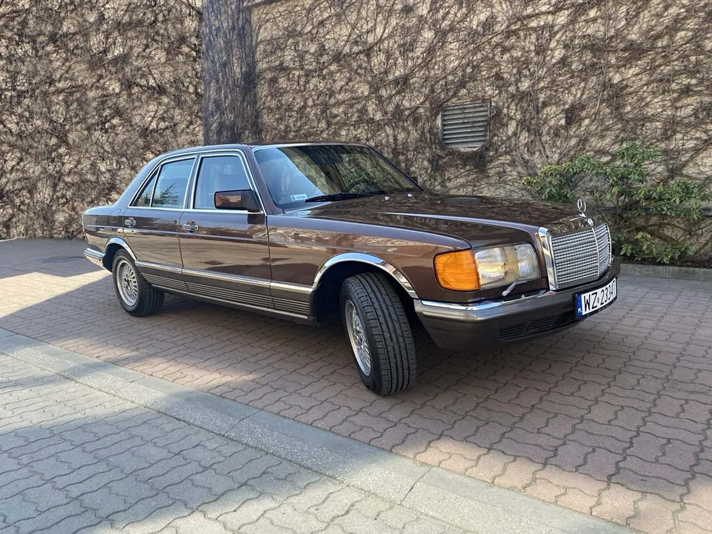
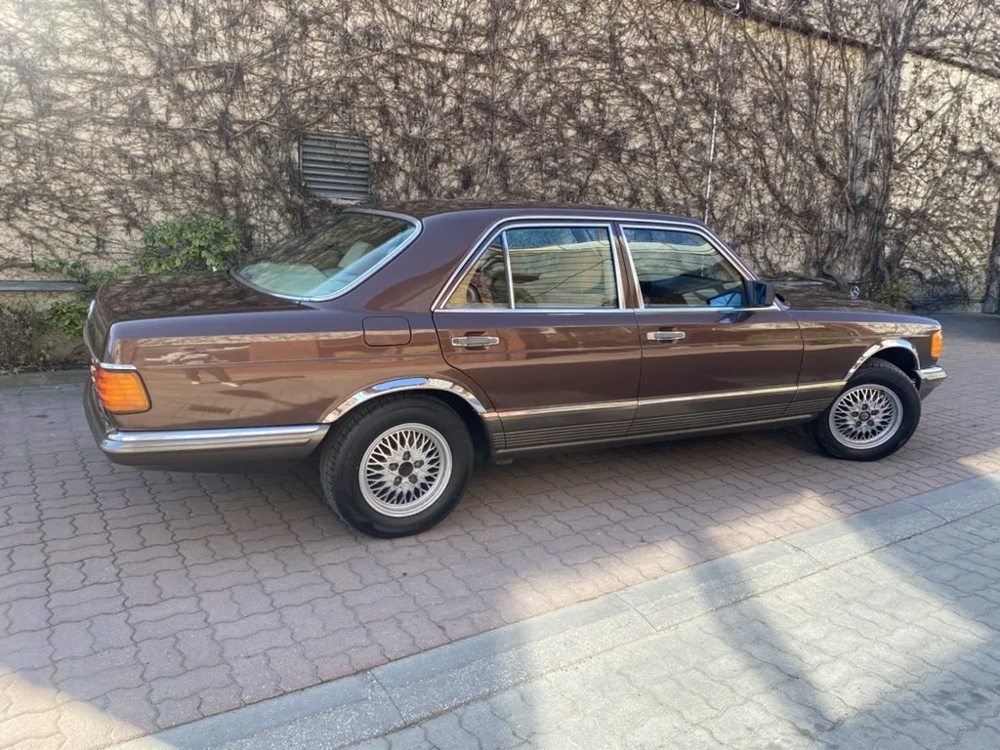

Kolor 480
Manganese Brown Metallic.
Lakier, w którym auto opuściło fabrykę w 1982 roku.
280 SE · 1982
Nowa Klasa S w oryginalnym kolorze.
Sylwetka

Manganese Brown Metallic · 480
Ten sam odcień, w którym wyjechał z fabryki.
Dane techniczne
Wtryskowy silnik 2,8 litra, który łączy dobre przyspieszenie z wytrzymałością na długie trasy.
Z prospektu z epoki

Kolor 480
Lakier, w którym auto opuściło fabrykę w 1982 roku.
Bagażnik
505 l
Bezpieczeństwo
Podatny przód, coraz sztywniejsza komora silnika i bardzo sztywna kabina pasażerska.
3
Heizmatic
Każdy ustawia własne pokrętło z dokładnością do stopnia. Czujnik utrzymuje wybraną wartość.
16–32°
Okładka prospektu
Rysunek z oryginalnego katalogu. Cały prospekt przeczytasz po polsku.
Galeria